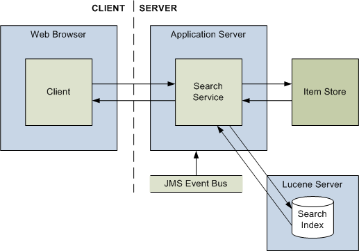

|
|||||||||||
| PREV PACKAGE NEXT PACKAGE | FRAMES NO FRAMES | ||||||||||
See:
Description
| Interface Summary | |
|---|---|
| ISearchService | A set of methods for performing searches of various kinds. |
| Class Summary | |
|---|---|
| StringArgumentTooLongException.Fault | Contains information about the enclosing
StringArgumentTooLongException. |
| TooManySeedsException.Fault | Contains information about the enclosing TooManySeedsException. |
| Exception Summary | |
|---|---|
| StringArgumentTooLongException | The exception raised when an argument contains (or is) a String that
is too long. |
| TooManySeedsException | The exception raised when a service method attempts to expand from more seeds than the server allows. |
The standard Intelligence Analysis Platform search service provides clients
with the ability to perform searches of various types against the latest
versions of data, and to retrieve scored search results.
Calls
to methods in this service must include a SOAP header containing an element
named <ApolloMetadata> with an attribute named
TimeZone. The value of the TimeZone attribute indicates
the time zone that the client requires dates and times to be sent and
displayed in.

The search service communicates with the item store, and maintains an index that is optimized for text-based searching. When the service detects an event on the bus that describes the creation, deletion, or modification of an item, it updates the index to reflects the new, deleted, or changed content of the item store.
For Intelligence Analysis Platform clients, running a search is usually a two-part operation:
| Web method | Description |
|---|---|
Search | Executes a search for items with data that matches the specified text, and returns a summary of the search results. |
DumbbellSearch | Executes a search for items with data that matches the specified text, in dumbbells with a specified structure, and returns a summary of the search results. |
Retrieve | Returns scored results containing items
(with the specified item types) that were found by an earlier call to
Search or
DumbbellSearch. |
SearchAndRetrieve | Performs a one-step search and retrieve operation,
combining the functionality of
Search and
Retrieve
into a single call. |
FindDuplicateItems | Finds items that can be considered duplicates because the values of certain properties match (or lie within a defined range of) specific values. |
Expand | Returns the links and entities, filtered by type, that are connected to the latest versions of entities with specified identifiers. |
PagedExpand | Performs the same actions as
Expand, but
returns its results in iterable pages. |
The search service implements the security rules of the Intelligence Analysis Platform in its index, so that the summary of results only contains information about items that the user who performed the search can access.
|
|||||||||||
| PREV PACKAGE NEXT PACKAGE | FRAMES NO FRAMES | ||||||||||